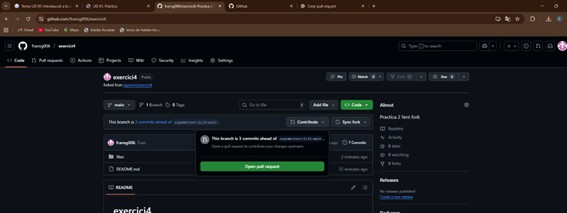
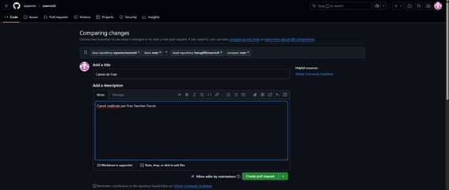

Pràctica Pull Request
Documentació dels passos fonamentals (amb instruccions) per fer el pull request. En finalitzar l’exercici (quan tots els alumnes hagen enviat el PR i el professor ho recorde) has d’actualitzar el teu repositori remot i enviar-me la URL per poder comprovar-ho. Que s’ha de fer: • Realitza primer un pull request al repositori per sol·licitar dos canvis: • Has de canviar el fitxer README.md per afegir un enllaç a la llista, on pose les teues inicials i vaja al fitxer que crearàs en el directori files. • Crea un fitxer al directori files, que s’anomene les_teus_inicials.md (en el meu cas s’anomenaria emm.md) i on escrigues a markdown la resposta a la pregunta: Quin mòdul t’agrada més? I per què? (cal utilitzar almenys 5 marques diferents de markdown). Realitza el pull request (amb un missatge de commit significatiu) i espera que sigua acceptat per mi. En acabar l’exercici has de sincronitzar el teu repositori perquè tingues tots els fitxers de tots els teus companys. • Tria un company i fes un Pull Request sobre un repositori seu. El mateix company o un altre ha de fer un Pull Request sobre un repositori teu.
Primer es fa un fork del repositori al cual vols aplicar canvis. Una vegada tindre el repositori de la professora al teu perfil, s’ha de fer un clone al pc local.

Una vegada fet el clone, en situem dins del directori clonat i treballem sobre ell. Dins d’ell es troba el directori files on s’ha de desar una imatge i el README.md on s’ha decrear un enllaç a la imatge amb el teu nom.

També el fitxer markdown.

Una vegada realitzat ho pujem al repositori amb el add, commit i push.

Seguidament fem un contribute amb el repositori de la professora.

Pràctica 02: Pull Request. Com col·laborar en un projecte de programari lliure? Lliurar la documentació de les passes fetes i on estiguen les captures: Acceptació del PR que ha fet el teu company sobre el teu repositori.
He fet el fork al repositori de Iker.

Pull request rebut de Iker.

L’he acceptat.

Ja apareix el document creat per Iker al meu repositori.

I el meu document sobre el repositori de Iker.

Realització del PR sobre el repositori del professor.
Es tracta del PR que he fet sobre el repositori de la professora.

Acceptació per part de la professora.